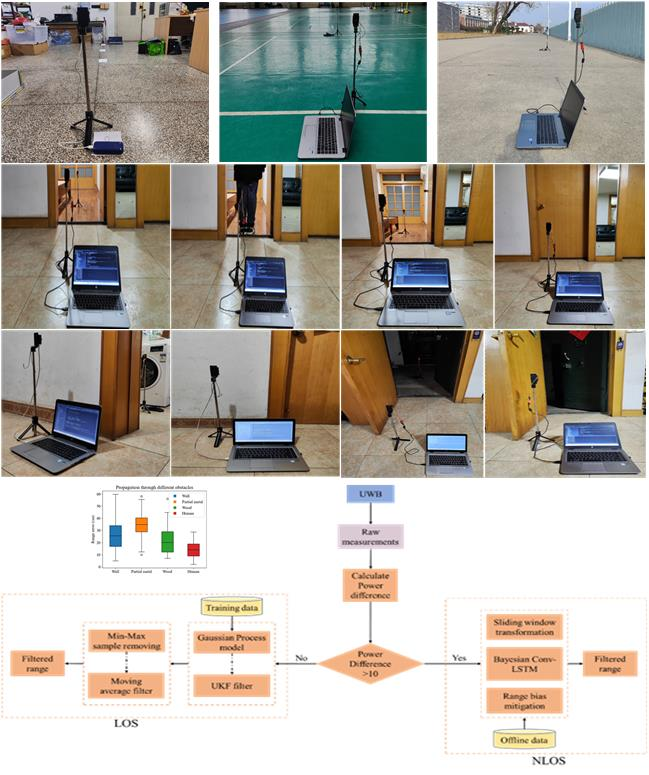

<!DOCTYPE html>
<html lang="en">

<head>
  <meta charset="UTF-8" />
  <meta http-equiv="X-UA-Compatible" content="IE=edge" />
  <meta name="viewport" content="width=device-width, initial-scale=1.0" />
  <title>Samsil Arefin Mozumder</title>
  <link rel="shortcut icon" href="images/Group 33091 (1).png" type="image/x-icon" />
  <link rel="stylesheet" href="style.css" />
  <!-- Bootstrap link -->
  <link href="https://cdn.jsdelivr.net/npm/bootstrap@5.1.1/dist/css/bootstrap.min.css" rel="stylesheet"
    integrity="sha384-F3w7mX95PdgyTmZZMECAngseQB83DfGTowi0iMjiWaeVhAn4FJkqJByhZMI3AhiU" crossorigin="anonymous" />
  <!-- font awesome -->
  <script src="https://kit.fontawesome.com/dc02adfae0.js" crossorigin="anonymous"></script>
</head>

<body class="bg-dark">
  <header>
    <nav class="navbar navbar-expand-lg navbar-dark bg-dark">
      <div class="container-fluid">
        <a class="navbar-brand" target="blank"
          href="https://www.linkedin.com/in/samsil-arefin-mozumder-20b20a14b"><button
            class="btn bg-primary text-white btn-hover">
            <span class="fs-4 fw-bolder">Linked</span>
            <i class="fab fa-linkedin fs-4"></i></button></a>
        <button class="navbar-toggler" type="button" data-bs-toggle="collapse" data-bs-target="#navbarNavDropdown"
          aria-controls="navbarNavDropdown" aria-expanded="false" aria-label="Toggle navigation">
          <span class="navbar-toggler-icon"></span>
        </button>
        <div class="collapse navbar-collapse" id="navbarNavDropdown">
          <ul class="navbar-nav">
            <li class="nav-item">
              <a class="nav-link active btn-hover ms-4" aria-current="page" href="#home">Home</a>
            </li>
            <li class="nav-item">
              <a class="nav-link active btn-hover ms-4" href="#projects">Projects</a>
            </li>
            <li class="nav-item">
              <a class="nav-link active btn-hover ms-4" href="#small-projects">Small Projects</a>
            </li>
            <li class="nav-item">
              <a class="nav-link active btn-hover ms-4" href="#contact">Contact me</a>
            </li>
          </ul>
        </div>
      </div>
    </nav>
  </header>

  <main class="container text-white">
    <div id="home" class="row align-item-center">
      <div class="col-lg-4 p-4 ms-auto mt-4">
        
      </div>

      <div class="col-lg-8 p-4 ms-auto mt-4">
        <h1 class="text-white mb-4 fw-bolder">
          Welcome to <br />
          <span class="text-warning">Samsil Arefin Mozumder</span>
          Profile
        </h1>

        <h5>Introduction</h5>
        <p>
          I am an Electronics and Computer enthusiast. I am deeply dedicated to Embedded 
          Systems and Machine Vision development, such as Embedded AI, Embedded Machine 
          Vision, IoT, and Robotics. I love to solve real-world problems through my 
          experiments.
        </p>

        
    </div>

    <!------------------
             Project Card Area  
          ----------------------->

        <div id="projects">
      <h1 class="my-4">My Projects</h1>
      <div class="row row-cols-1 row-cols-md-3 g-4 text-black">
        <div class="col">
          <div class="card h-100 single-card rounded-2">
            
            <div class="card-body">
              <h5 class="card-title">
                 A Gaussian Process-Enhanced Non-Linear Function and Bayesian Convolution–Bayesian Long Term
                Short Memory Based Ultra-Wideband Range Error Mitigation Method for Line of Sight and 
                Non-Line of Sight Scenarios. (Mathematics MDPI)

              </h5>
              <p class="card-text">
                Abstract:  Relative positioning accuracy between two devices is dependent on the precise
                range measurements. Ultra-wideband (UWB) technology is one of the popular and widely used 
                technologies to achieve centimeter-level accuracy in range measurement. Nevertheless,
                harsh indoor environments, multipath issues, reflections, and bias due to antenna delay 
                degrade the range measurement performance in line-of-sight (LOS) and non-line-of-sight
                (NLOS) scenarios. This article proposes an efficient and robust method to mitigate range 
                measurement error in LOS and NLOS conditions by combining the latest artificial 
                intelligence technology. A GP-enhanced non-linear function is proposed to mitigate 
                the range bias in LOS scenarios. Moreover, NLOS identification based on the sliding 
                window and Bayesian Conv-BLSTM method is utilized to mitigate range error due to the 
                non-line-of-sight conditions. A novel spatial–temporal attention module is proposed 
                to improve the performance of the proposed model. The epistemic and aleatoric uncertainty 
                estimation method is also introduced to determine the robustness of the proposed 
                model for environment variance. Furthermore, moving average and min-max removing 
                methods are utilized to minimize the standard deviation in the range measurements 
                in both scenarios. Extensive experimentation with different settings and configurations 
                has proven the effectiveness of our methodology and demonstrated the feasibility 
                of our robust UWB range error mitigation for LOS and NLOS scenarios.
              </p>
            </div>
          </div>
        </div>
        <div class="col">
          
          <div class="card h-100 single-card rounded-2">
            
            <div class="card-body">
              <h5 class="card-title">
                 Research on Vertical Shaft Detection System Based on CMOS-Camera and Lidar. (IEEE Access)
              </h5>
              <p class="card-text">
                Abstract:  This research focuses on the pivotal role of coal mining shaft safety. Deformations
                and fractures in the shaft wall can cause significant risks to mine operations, which require 
                regular safety inspection to prevent hazards. Existing shaft detection systems cannot provide 
                any prior notifications before damage occurs, with complex systems and low intelligence. To 
                solve these problems, our proposed system has three key indicators: shaft deformation,
                shaft perpendicularity, and horizontal vibration of the lifting container. This intelligent 
                system reduces the likelihood of significant shaft damage by enhancing automation, intelligence,
                and efficiency. The research starts by defining the essential features required for the shaft detection
                system, like data acquisition system, data transmission, and data processing. Hardware includes LiDAR sensors,
                CMOS cameras, laser collimators, control board, batteries, and software implemented on ROS. This system collects data,
                simulates shaft conditions, and conducts horizontal vibration displacement detection experiments. Moreover,
                we validated shaft deformation and perpendicularity detection under static conditions. This research concludes
                by analyzing the accuracy of the detection system in actual working conditions, confirming its practicality and
                reliability. Overall, this research solves critical issues in shaft safety and introduces an 
                intelligent, efficient, and smart solution.
              </p>
            </div>
          </div>
        </div>
        
        <div class="col">
          <div class="card h-100 single-card rounded-2">
            
            <div class="card-body">
              <h5 class="card-title">
                 Derailment detection of mining shaft’s rail vehicle using machine vision on edge device. (Conference Paper)
              </h5>
              <p class="card-text">
                Abstract:  The railway system is pivotal in the mineral transportation industry. 
                Due to rail track shape deformation or imbalance, the situation worsens. Stone, 
                coal, and dust can also obstruct the mine rail transportation system. Moreover, 
                derailment is very likely to happen, but conventionally, it is difficult to determine 
                whether the vehicle is derailed. Scientists have developed different derailment 
                detection techniques to overcome these difficulties, but most are implemented using
                sensors only. In challenging conditions, such as inside a mine shaft, sensor systems can fail 
                for various reasons such as high dust levels, humidity, and fallen stones. These
                factors can easily destroy the sensors, especially if they are placed near to the 
                ground surface. Machine vision, on the other hand, can detect objects from a greater distance
                than sensors. In our proposed system, we introduced a machine vision approach based on a 
                Raspberry Pi, which combines YOLOv5n deep learning model and OpenCV to detect different types
                of derailment. Our system can be used as a rail track detection system by analyzing realtime 
                video data.
              </p>
            </div>
          </div>
        </div>
    
        <div class="col">
          <div class="card h-100 single-card rounded-2">
            
            <div class="card-body">
              <h5 class="card-title">
                Smart IoT-Biofloc water management system using Decision regression tree (Conference Paper)
              </h5>
              <p class="card-text">
                Abstract: The conventional fishing industry has several difficulties, such as water contamination,
                temperature instability, nutrition, area, expense, etc. In fish farming, Biofloc technology turns
                traditional farming into a sophisticated infrastructure that enables the utilization of leftover
                food by turning it into mi-crobial biomass. The objective of our study is to propose an intelligent
                IoT Bi-ofloc system that improves efficiency and production. This article introduced a system that
                gathers data from sensors, store data in the cloud, analyses it using a machine learning model such
                as a Decision regression tree model to predict the water condition, and provides real-time monitoring
                through an android app. The proposed system has achieved a satisfactory accuracy of 79% during the
                expe-riment.
              </p>
            </div>
          </div>
        </div>

        <div class="col">
          <div class="card h-100 single-card rounded-2">
            
            <div class="card-body">
              <h5 class="card-title">
                IRHA: An Intelligent RSSI based Home automation System (Conference Paper)
              </h5>
              <p class="card-text">
                Abstract: Human existence is getting more sophisticated and better in many areas due to remarkable
                advances in the fields of automation. Automated systems are favored over manual ones in the current
                environment.Home Automation is becoming more popular in this scenario, as people are drawn to the
                concept of a home environment that can automatically satisfy users' requirements.The key challenges
                in an intelligent home are intelligent decision making, location-aware service, and compatibility
                for all users of different ages and physical conditions. Existing solutions address just one or
                two of these challenges, but smart home automation that is robust, intelligent, location-aware,
                and predictive is needed to satisfy the user's demand. This paper presents a location-aware
                intelligent home automation system that uses Wi-Fi signals to detect the user's location and
                control the appliances automatically. The fingerprinting method is used to map the Wi-Fi signals
                for different rooms, and the machine learning method, such as Decision Tree, is used to classify
                the signals for different rooms. The machine learning models are then implemented in the ESP32
                microcontroller board to classify the rooms based on the real-time Wi-Fi signal, and then the
                result is sent to the main control board through the ESP32 MAC communication protocol to control
                the appliances automatically. The proposed method has achieved 92% accuracy in classifying the
                users' location.
              </p>
            </div>
          </div>
        </div>

        <div class="col">
          <div class="card h-100 single-card rounded-2">
            
            <div class="card-body">
              <h5 class="card-title">LoRaComm: Ultrasonic Sensor Network for Real-Time Monitoring</h5>
              <p class="card-text">
                The system features a sender unit equipped with two ultrasonic 
                sensors and a potentiometer, all connected to an STM32 
                microcontroller. This unit also includes a 1278 LoRa module 
                for long-range communication. A separate STM32 microcontroller
                on the receiving end is connected to another LoRa module. This 
                setup enables effective data capture and processing by the 
                receiver. The received values are then displayed in Modscan. 
                This is made possible through a TTL to Modbus module, 
                ensuring seamless communication.
              </p>
            </div>
          </div>
        </div>

        <div class="col">
          <div class="card h-100 single-card rounded-2">
            
            <div class="card-body">
              <h5 class="card-title">Campus Automation</h5>
              <p class="card-text">
                This project, designed specifically for the COVID-19 situation,
                utilizes a variety of hardware components including an Arduino 
                Pro Mini, Ultrasonic Sensor, Bluetooth Module, 4-Channel Relay 
                Module, Servo Motors, MLX-90614 Sensor, MQ-2 Smoke Sensor, Buzzer,
                20*4 I2C LCD, PIR Sensor, Pump, IR Sensor, and a Switching Circuit.
                The project is divided into five key sections. The first section
                uses the MLX-90614 sensor to detect human temperature from a distance.
                If the temperature is below 98.6°F, the campus gate opens; otherwise, 
                a sound is emitted and the gate remains closed. The second section is
                a touchless water tap for sanitization, activated by an IR sensor and
                controlled by a switching circuit and pump. The third section is a 
                touchless dustbin that uses an ultrasonic sensor to detect a human hand
                and a metal gear servo to open and close the cover. The fourth section
                is a voice-controlled classroom automation system that uses an Android app, 
                Bluetooth, Arduino, Relay Module, and loads. The final section is a smoke
                detection system that uses the MQ-2 sensor to detect smoke or gas and
                emits a beep sound when detected.
              </p>
            </div>
          </div>
        </div>

        <div class="col">
          <div class="card h-100 single-card rounded-2">
            
            <div class="card-body">
              <h5 class="card-title">
                Face Mask Detection Based Automatic Gate
              </h5>
              <p class="card-text">
                The “Face Mask Detection Based Automatic Gate” is an embedded system that
                leverages Google’s Teachable Machine, an accessible online machine learning 
                tool. By training the tool with various image samples, it can distinguish 
                between two different types of images and generate a model link. The ESP32 
                Camera Module, which is internet-enabled via built-in WiFi, is used in this 
                project. The model link is integrated into the ESP32 Cam, which captures 
                images for analysis by the Teachable Machine. Upon making a decision, the
                system communicates with the Arduino to open the gate and displays relevant
                gate indicators on an LCD and LED.
              </p>
            </div>
          </div>
        </div>

        <div class="col">
          <div class="card h-100 single-card rounded-2">
            
            <div class="card-body">
              <h5 class="card-title">Rubik's Cube Solver Robot</h5>
              <p class="card-text">
                This robot, designed to solve a Rubik’s cube, is constructed from PVC
                board and wood. It’s programmed using two languages: Python and C++. 
                The graphical user interface (GUI), the Kociemba algorithm, and the 
                instructions that signal the Arduino to operate the servo are all written 
                in Python. The Arduino, in turn, receives these signals from the PC and 
                rotates the servos as instructed. The robot is equipped with three servos: 
                push, hold, and rotate. Additionally, a vibration motor is utilized to 
                intelligently manipulate the cube’s movements.

              </p>
            </div>
          </div>
        </div>

        <div class="col">
          <div class="card h-100 single-card rounded-2">
            
            <div class="card-body">
              <h5 class="card-title">IoT weather Station</h5>
              <p class="card-text">
                The system is equipped with several hardware components: an LDR,
                DHT11, BMP180, and ESP32. These sensors allow the system to take
                five different readings: light intensity, atmospheric pressure, 
                temperature, and humidity. The data from these sensors is processed 
                using Arduino code written in HTML. An IP interface has been 
                implemented to display the readings, which include luminosity,
                altitude, atmospheric pressure, humidity, and temperature. These 
                values can be accessed by pasting the IP address into any device
                connected to a common router.
              </p>
            </div>
          </div>
        </div>

        <div class="col">
          <div class="card single-card h-100 rounded-2">
            
            <div class="card-body">
              <h5 class="card-title">
                Face Recognition & Temperature Detection Based Automatic Gate
              </h5>
              <p class="card-text">
                In this system, an ESP32 Cam is used for face detection and 
                recognition. Alongside this, an Arduino is employed to gather
                readings from the MLX90614 IR temperature sensor. This sensor
                measures temperature and ensures it falls within a safe limit.
                The system also checks if the detected face is recognized. If
                both conditions are met - the temperature is within the safe 
                range and the face is familiar - then the servos are activated
                to open the gate.
              </p>
            </div>
          </div>
        </div>

        <div class="col">
          <div class="card h-100 single-card rounded-2">
            
            <div class="card-body">
              <h5 class="card-title">Automatic Bottle Filling System</h5>
              <p class="card-text">
                The system is equipped with several hardware components: an 
                IR sensor, a gear motor, a water pump, an Arduino, a relay, 
                an LCD, and push buttons. The push buttons are used to set the 
                pump’s operation time, start and stop the system, and select digits.
                When a bottle is placed on the conveyor, the sensor detects it, 
                causing the conveyor to stop and the pump to start filling the 
                bottle with water. The system then pauses briefly to allow for water 
                droplets to fall before the conveyor starts running again. It stops
                once more when it reaches another sensor, which signals that the 
                bottle can be removed from the conveyor.
              </p>
            </div>
          </div>
        </div>

        <div class="col">
          <div class="card h-100 single-card rounded-2">
            
            <div class="card-body">
              <h5 class="card-title">Voice Control Robot</h5>
              <p class="card-text">
                The robot operates based on five commands: Go, Back, Turn Left,
                Turn Right, and Stop. The hardware components of this system 
                include an Arduino Uno, a Bluetooth Module HC-05, and an L298N.
                These components work together to enable the robot’s movements.
                An Android app is used to provide voice commands to the robot.
                Upon receiving these commands, the robot activates the corresponding
                functions.
              </p>
            </div>
          </div>
        </div>


        <div class="col">
          <div class="card h-100 single-card rounded-2">
            
            <div class="card-body">
              <h5 class="card-title">Mini CNC Plotter</h5>
              <p class="card-text">
                This project features a structure composed of metal and acrylic. 
                The stepper housings are repurposed from broken DVD drives. The 
                Z-axis is represented by a modified pen that can move its nib
                vertically. Movement along the X and Y axes is facilitated by 
                the use of a stepper motor. Two drivers are employed to control
                these movements. Writable files from MIT processing software are 
                transmitted to the Arduino via serial communication and plotted
                according to the file orientation. The stepper and servo mechanisms 
                are electrically interconnected through the Arduino, drawing a significant 
                amount of current. The entire structure is mounted on an acrylic base,
                lending precision and aesthetic appeal to the design.

              </p>
            </div>
          </div>
        </div>


        <div class="col">
          <div class="card h-100 single-card rounded-2">
            
            <div class="card-body">
              <h5 class="card-title">
                Heat Shrink Tube Cutter Machine Modification
              </h5>
              <p class="card-text">
                This project is a safety enhancement for a machine that has a 
                removable safety cover. There’s a risk that the cover could be 
                opened while the machine is cutting tubes, potentially leading
                to finger injuries. The hardware components used include a 
                2N3904 BJT, a 555 Timer IC, a relay, and a limit switch. A 
                logic circuit has been designed using relays that triggers a
                beep sound at 1Hz frequency when the cover is open. This audible 
                alert serves as a safety feature to prevent accidents.
              </p>
            </div>
          </div>
        </div>
        <div class="col">
          <div class="card h-100 single-card rounded-2">
            
            <div class="card-body">
              <h5 class="card-title">Bend Product Check Tester</h5>
              <p class="card-text">
                The hardware components used in this project include a 2N3904 BJT,
                resistors, a diode, a fiber sensor, and a limit switch. This design 
                was prompted by the discovery of some of our products being bent in
                Japan. As a result, I developed a testing device capable of detecting
                bends as small as 1.2mm in the product. The circuitry of this
                tester was designed exclusively with BJTs and incorporates
                both Normally Open (NO) and Normally Closed (NC) actions. 
                In the absence of a product on the tester, a yellow lamp is illuminated.
                However, when a product is placed on the tester, the yellow lamp turns off.
                The tester then makes a decision, indicated by either a green or red lamp,
                along with a buzzer. This system effectively identifies any product deformities
              </p>
            </div>
          </div>
        </div>
      </div>
    </div>

    <!-- Small Projects  -->
    <div id="small-projects" class="my-4">
      <h1 class="my-4">My Small Projects</h1>
      <h6><span class="text-warning">GSM Based Irrigation System</span></h6>
      <h6><span class="text-warning">Height Measuring Instrument</span></h6>
      <h6><span class="text-warning">Gas Leakage Detection Device</span></h6>
      <h6><span class="text-warning">Level Sensing Device</span></h6>
      <h6><span class="text-warning">Obstacle Avoiding Robot</span></h6>
      <h6><span class="text-warning">Smart Basin,Dustbin,Door</span></h6>
      <h6><span class="text-warning">IoT Home Automation</span></h6>
    </div>

    <!-- Photo Slider -->
    <div id="carouselExampleIndicators" class="carousel slide w-50 mx-auto my-4 border rounded-3"
      data-bs-ride="carousel">
      <div class="carousel-indicators">
        <button type="button" data-bs-target="#carouselExampleIndicators" data-bs-slide-to="0" class="active"
          aria-current="true" aria-label="Slide 1"></button>
        <button type="button" data-bs-target="#carouselExampleIndicators" data-bs-slide-to="1"
          aria-label="Slide 2"></button>
        <button type="button" data-bs-target="#carouselExampleIndicators" data-bs-slide-to="2"
          aria-label="Slide 3"></button>
      </div>
      <div class="carousel-inner">
        <div class="carousel-item active">
          
        </div>
        <div class="carousel-item">
          
        </div>
        <div class="carousel-item">
          
        </div>
      </div>
      <button class="carousel-control-prev" type="button" data-bs-target="#carouselExampleIndicators"
        data-bs-slide="prev">
        <span class="carousel-control-prev-icon" aria-hidden="true"></span>
        <span class="visually-hidden">Previous</span>
      </button>
      <button class="carousel-control-next" type="button" data-bs-target="#carouselExampleIndicators"
        data-bs-slide="next">
        <span class="carousel-control-next-icon" aria-hidden="true"></span>
        <span class="visually-hidden">Next</span>
      </button>
    </div>

    <!-- Gallery Button  -->

    <div class="text-center">
      <a target="blank" href="gallery/gallery.html">
        <button class="btn bg-warning text-black btn-hover">
          <span class="fs-3 fw-bolder">Go to my photo Gallery</span>
          <i class="fas fa-images fs-3"></i></button></a>
    </div>
  </main>

  <!-- Footer section  -->
  <footer id="contact" class="bg-secondary">
    <div class="p-4 my-4 mx-auto text-center text-white">
      <h3>Contact With Me</h3>
      <p>
        <span class="text-white"><i class="fas fa-envelope-square"> Email:</i></span>
        samsilarefin313@gmail.com
      </p>
      <p>
        <span class="text-white"><i class="fas fa-mobile-alt"> Mobile:</i></span>
        +8613160277619
      </p>
      <a target="blank" href="https://www.linkedin.com/in/samsil-arefin-mozumder-20b20a14b">
        <button class="btn bg-primary text-white btn-hover">
          <span class="fs-3 fw-bolder">Linked</span>
          <i class="fab fa-linkedin fs-3"></i></button></a>

      <p class="my-4">© 2024. All rights reserved</p>
    </div>
  </footer>

  <!-- Bootstrap js link  -->
  <script src="https://cdn.jsdelivr.net/npm/bootstrap@5.1.1/dist/js/bootstrap.bundle.min.js"
    integrity="sha384-/bQdsTh/da6pkI1MST/rWKFNjaCP5gBSY4sEBT38Q/9RBh9AH40zEOg7Hlq2THRZ"
    crossorigin="anonymous"></script>
</body>

</html>
